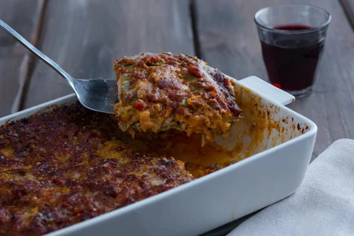

Lasagna recipe

Description
Lasagna is an institution, typical for Sunday lunches.
This rich and tasty dish originates from the Emilia region, specifically,
from the city of Bologna. Lasagna, however, is known, appreciated, made,
remade, tasted and shared not only throughout Italy, but also abroad as an
Italian symbolic dish.
Layers of green egg pasta, dressed with the classic traditional ragù,
béchamel and grated cheese.
Obviously, lasagna has numerous and delicious variations such as
the pumpkin and sausage, or the one with mushrooms, perfect for
autumn menus.
From the preparation to the ingredients, this recipe is the quintessence
of the "richness" of traditional Bolognese cuisine, also famous for many
other fresh pasta recipes and more.
You just need to prepare it and enjoy it with your family for a very special
day!
Ingredients
- Remilled durum wheat semolina 2.1 cups (350 g)
- Flour 00 1.3 cups (150 g)
- Spinach 8.8 oz (250 g)
- Eggs 2
- Egg yolks 3
- Beef 10.6 oz (300 g) - (minced, coarsely ground and mixed)
- Pancetta bacon 5.3 oz (150 g)
- Carrots ½ cup (50 g)
- Celery ½ cup (50 g)
- Yellow onions 1 cup (50 g)
- Red wine ½ cup (100 g)
- Tomato puree 1 ¼ cup (300 g)
- Vegetable broth to taste
- Extra virgin olive oil 1 tbsp
- Fine salt to taste
- Black pepper to taste
- Butter 0.3 cup (70 g)
- Flour 00 0.6 cup (70 g)
- Whole milk 1 quart (1 l)
- Fine salt 1 pinch
- Nutmeg to taste
- Butter to taste
- Parmigiano Reggiano DOP cheese 2.3 cups (270 g)
Preparation
- To prepare lasagna, start with the meat sauce.
Prepare the vegetable broth and ensure to keep it warm.
Then take the pancetta bacon, cut it into strips first and then chop it well.
- Separately, finely chop the carrots, onions, celery and set aside
- In a saucepan, pour a drizzle of oil and the pancetta bacon.
Use a ladle to spread it well
and let it brown for a few minutes. Then add the chopped vegetables
and cook for 5-6 minutes . Then add the minced meat
- Stir and raise the heat. Let the meat brown slowly, it must be well browned to seal the juices and be soft.
Deglaze with red wine
and let it evaporate completely before adding the tomato puree.
- The Bolognese sauce must cook for two hours.
When it starts boiling again, you can add some hot broth, one or two ladles
and let the sauce cook for another couple of hours at least.
Let it cook with the lid on, without covering the pan completely
- Check and stir from time to time, add more broth when needed and let it cook.
Now move on to the pasta. First, pour the spinach into a pan
add a little water, cover with a lid
- and cook until they are wilted, it will take 5-6 minutes in total
- At this point, drain them, let them cool and squeeze them well
- Transfer the spinach to a mixer and blend them until you get a puree
- You will need to get approx 3.5 cups (100 g) of it.
Now on a pastry board pour the semolina and 00 flour add the spinach and
create a fountain shape. Add the lightly beaten eggs and egg yolks.
- Begin to knead everything starting from the center , this way the eggs will
not slip out of the fountain. Knead well until you get a homogeneous dough.
- Wrap it in plastic wrap and let it rest for 30 minutes at room temperature.
In the meantime, prepare the béchamel sauce.
- Heat the milk in a saucepan , without boiling it.
In another pan, place the butter and let it melt.
- Add the flour in one go and cook for a few minutes until you get a golden roux 26.
Then, pour the hot milk in three times , mixing well.
- Add salt and flavor with nutmeg . Continue to mix until you get a creamy béchamel.
Transfer to a small bowl, cover with plastic wrap and set aside.
As soon as 30 minutes have elapsed, take the dough back and take a piece .
Cover the rest of the dough with plastic wrap to keep it from drying out.
- With the help of a little semolina flatten it slightly on the pastry board
to form a rectangle and roll out the dough in the machine .
Start from a wider thickness, then fold the dough and pass it over.
When you feel it is too wet, sprinkle with a little semolina.
Gradually reduce the thickness until you get a sheet just
over 0.2 inches (0.5 mm) thick.
Transfer it to a pastry board and cut into large
rectangles 12x8 inches (30x20 cm) .
Continue this way until the dough is finished and in the meantime put a pot of
water on the stove and add salt.
When it starts to boil, immerse one sheet at a time , wait 30-40 seconds and
using a skimmer drain it .
- Transfer it to a tray with a cloth and dab to remove excess water.
Continue this way, placing the cooked sheets side by side,
without overlapping them. As soon as the Bolognese sauce is ready ,
season with salt and pepper and proceed to the composition of the lasagna.
- Take a large 12x8 inches (30x20 cm) lasagna pan and grease the bottom .
Add a thin layer of béchamel and one of Bolognese sauce.
- Then place the first sheet, add a layer of béchamel and a layer of
meat sauce. Add grated Parmesan cheese and place another sheet of
pasta on top .
- Add another layer of béchamel and one of meat sauce, add grated cheese
and continue like this until you have 5 layers.
After placing the last sheet, add the Bolognese sauce in order to completely
cover the pasta sheet.
- Sprinkle with grated cheese, add some tufts of butter
and bake in a preheated static oven at 338°F (170°C) for 40 minutes.